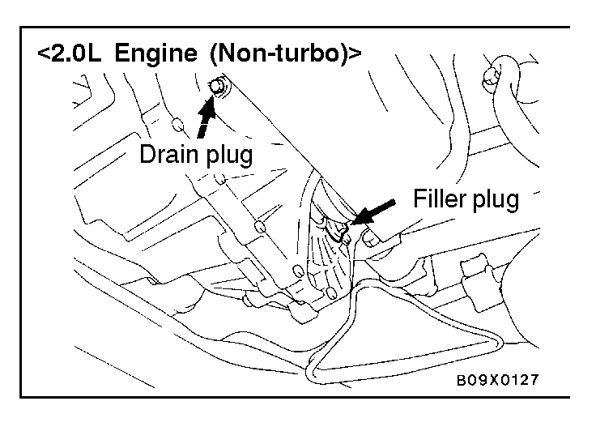
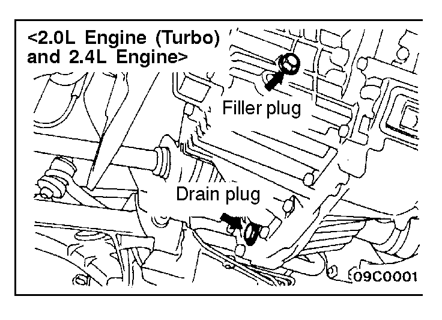
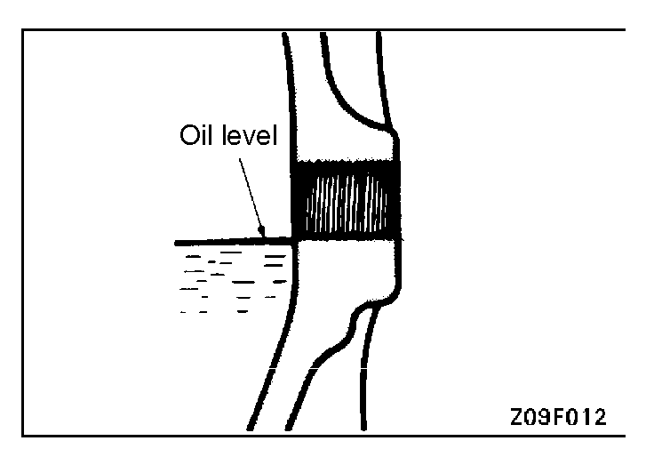

![[Previous]](https://mitsubishitechinfo.com/data/F24S/BUTTONS/fprevg.png)
![[Next]](https://mitsubishitechinfo.com/data/F24S/BUTTONS/fnextg.png)
  
11.MANUAL TRANSAXLE OIL
(Check oil level)
Check each component for evidence of leakage, and check the oil level by removing the filler plug. If the oil is contaminated, it is necessary to replace it with new oil.
1.With the vehicle parked at a level place, remove the filler plug and check that the oil level.
2.The level must be up to the lower edge of the filler plug hole.
3.Check that the transaxle oil is not noticeably dirty, and that it has a suitable viscosity.
(Change oil)
1.Remove transaxle drain plug.
2.Drain oil.
3.Tighten drain plug to specified torque.
Specified torque:
<2.0L Engine (Non-turbo)> 30 Nm (22 ft.lbs.)
<2.0L Engine (Turbo) and 2.4L Engine>
32 Nm (24 ft.lbs.)
4.Remove filler plug and fill with specified oil till the level comes to the lower portion of filler plug hole.
Specified oil:
<2.0L Engine (Non-turbo)>
TEXACO MTX FLUID FM
<2.0L Engine (Turbo) and 2.4L Engine>
API classification GL-4, SAE 75W - 90 or 75W - 85W
Quantity:
<FWD> 2.0 dm3 (2.1 qts.)
<AWD> 2.3 dm3 (2.4 qts.)
5.Tighten filler plug to specified torque.
Specified torque:
<2.0L Engine (Non-turbo)> 30 Nm (22 ft.lbs.)
<2.0L Engine (Turbo) and 2.4L Engine>
32 Nm (24 ft.lbs.)